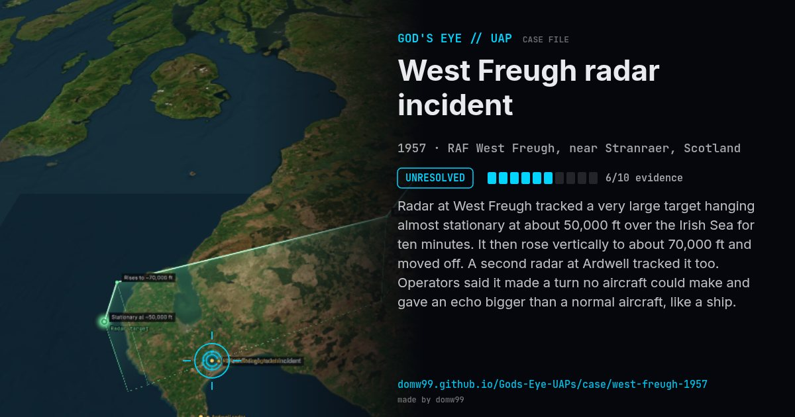

West Freugh radar incident
UNRESOLVED

Radar at West Freugh tracked a very large target hanging almost stationary at about 50,000 ft over the Irish Sea for ten minutes. It then rose vertically to about 70,000 ft and moved off. A second radar at Ardwell tracked it too. Operators said it made a turn no aircraft could make and gave an echo bigger than a normal aircraft, like a ship.
What was seen
Shape: Radar echo "as large as a ship"
Witnesses: Radar operators at West Freugh and Ardwell
Duration: About 30 minutes
Sources
Browse
- United Kingdom
- 1950s
- Unresolved
- Radar-visual cases
- Official government documents
- Military witnesses
- Radar tracking